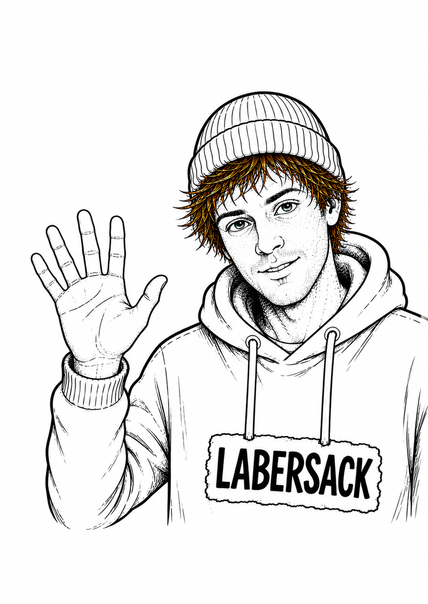
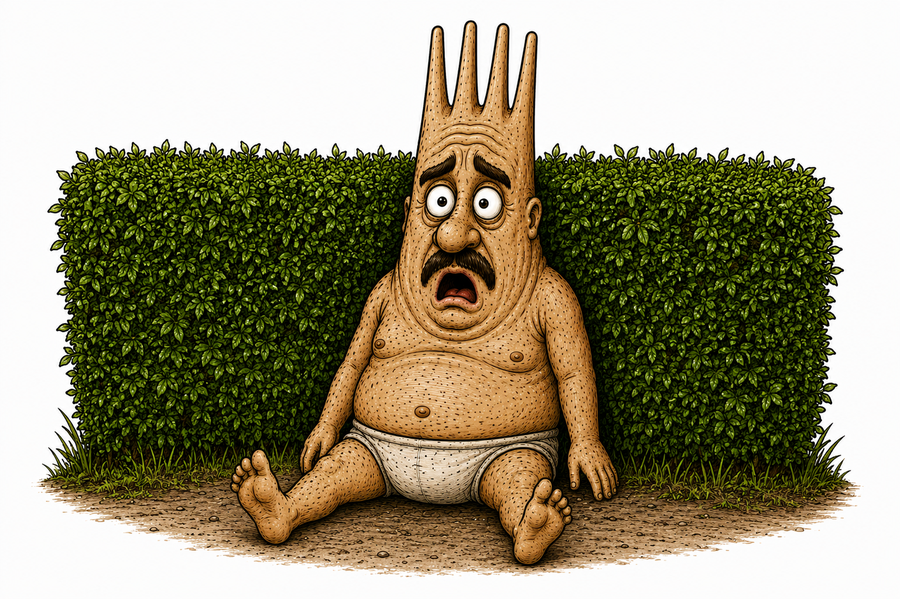
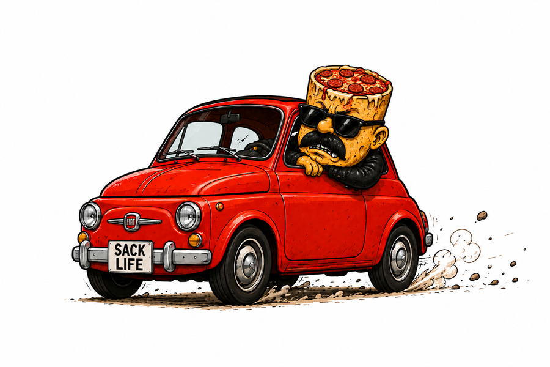

The Good, The Bad and The Junkie
Ein Klinikroman über Angst, Schuld, Kontrollverlust und die Menschen, die bleiben, wenn eigentlich nichts mehr geht. Düster, ehrlich und trotzdem nicht ohne Hoffnung.
Zum BuchDIREKT. SCHRÄG. OHNE FILTER.
Geschichten, die sich gut lesen, böse reinziehen und lange nicht mehr loslassen.
Bücher entdeckenKeine glatte Ware. Eher Geschichten mit Macken, Narben und Nachbrenner.
Ein Klinikroman über Angst, Schuld, Kontrollverlust und die Menschen, die bleiben, wenn eigentlich nichts mehr geht. Düster, ehrlich und trotzdem nicht ohne Hoffnung.
Zum Buch
Willkommen in Sackingen: einer Stadt voller Säcke, Abgründe, Wortspiele und Figuren, die sehr überzeugt davon sind, normal zu sein. Funktioniert eigenständig, belohnt aber alle, die tiefer graben.
Zum Buch
Willkommen in Sackingen.
Alles begann mit einem einzigen dummen Gedanken: Was wäre, wenn alle Menschen einfach Säcke wären? Normalerweise verschwinden solche Gedanken wieder. Dieser hier nicht. Er bekam eine Stadt, Einwohner, einen Gott, einen schwarzen Turm, einen Bibbeleskäs-Fanatiker und irgendwann komplett die Kontrolle über die Situation.
Sackingen ist eine Stadt voller Säcke. Ein Ort, an dem Cowboys Säcke wegpusten, Filmstars werden, schwäbische Philosophen in Sinklöchern leben und Figuren irgendwann merken, dass ihre Geschichte vielleicht von jemand anderem geschrieben wird.
Der Comic funktioniert komplett eigenständig. Wer die Romane kennt, findet zusätzliche Gags, Zusammenhänge und tiefere Ebenen. Wer neu kommt, bekommt trotzdem genug Murks für beide Hände.


Ein Fuchs-Cowboy mit zu viel Staub im Mantel und zu wenig Geduld für normale Lösungen.

Absolutes Kino, selbst wenn gerade niemand gefragt hat. In Sackingen reicht das als Berufsbezeichnung.

Manche Figuren erklären die Welt. Andere sitzen davor und verstehen sie exakt gar nicht.

Wenn Sackingen Ordnung verspricht, steht Drecksack meist schon mit dem Gegenteil bereit.

Kommt selten leise. Geht selten ohne Szene. Und irgendwo wartet immer ein roter Fiat.

Farbe, Flasche, falsches Timing. In Sackingen reicht das für eine Nebenhandlung.

Was als absurder Witz begann, wurde zu einer Geschichte über Identität, Freundschaft, Einsamkeit, Familie, psychische Krisen und die Frage, wer wir eigentlich sind, wenn die Rollen wegfallen, die wir unser ganzes Leben gespielt haben. Denn am Ende sind wir alle Säcke. Jeder trägt sein eigenes Säckle.
Downloads folgen bald. Die Buttons sind vorbereitet und können später mit echten Links ersetzt werden.
Digitalausgabe
Digitalausgabe
Comicband
Fragen, Buchbestellungen oder Anfragen an:
noah-zimmermann@gmx.net